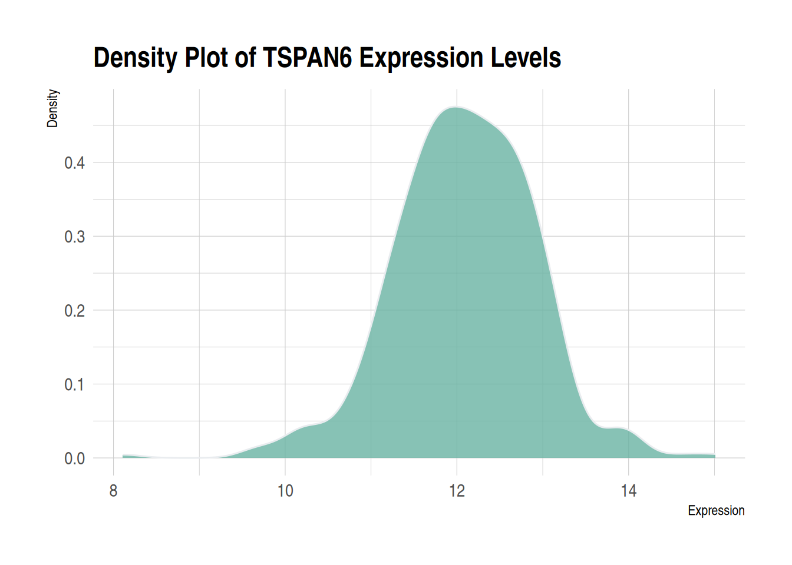
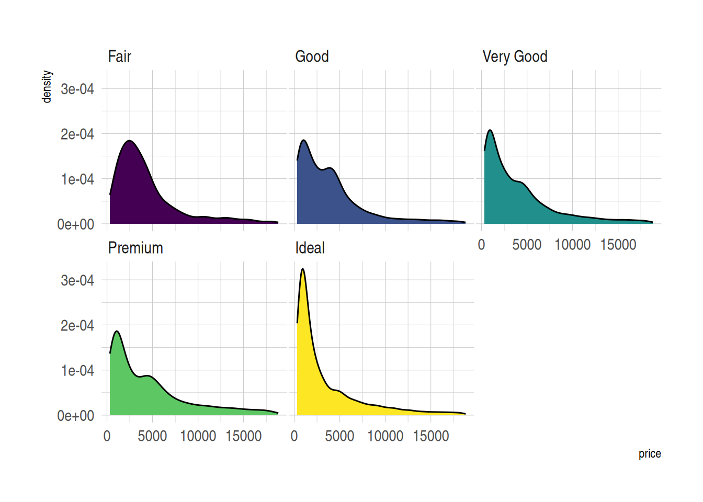

# Installing necessary packages
if (!requireNamespace("readr", quietly = TRUE)) {
install.packages("readr")
}
if (!requireNamespace("ggplot2", quietly = TRUE)) {
install.packages("ggplot2")
}
if (!requireNamespace("ggExtra", quietly = TRUE)) {
install.packages("ggExtra")
}
if (!requireNamespace("hrbrthemes", quietly = TRUE)) {
install.packages("hrbrthemes")
}
if (!requireNamespace("dplyr", quietly = TRUE)) {
install.packages("dplyr")
}
if (!requireNamespace("tidyr", quietly = TRUE)) {
install.packages("tidyr")
}
if (!requireNamespace("viridis", quietly = TRUE)) {
install.packages("viridis")
}
if (!requireNamespace("ggpmisc", quietly = TRUE)) {
install.packages("ggpmisc")
}
if (!requireNamespace("ggpubr", quietly = TRUE)) {
install.packages("ggpubr")
}
if (!requireNamespace("geomtextpath", quietly = TRUE)) {
install.packages("geomtextpath")
}
if (!requireNamespace("cowplot", quietly = TRUE)) {
install.packages("cowplot")
}
# Loading the libraries
library(readr) # For read files
library(ggplot2) # For creating plots
library(ggExtra) # For enhancing ggplot2 graphics
library(hrbrthemes) # For professional themes
library(dplyr) # For data manipulation
library(tidyr) # For reshaping data
library(viridis) # For color maps
library(ggpmisc) # For statistical annotations
library(ggpubr) # For publication-ready themes
library(geomtextpath) # For adding text to density curves
library(cowplot) # Plot alignment and annotation packageDensity Plot
A density plot represents the distribution of a numerical variable using kernel density estimation to display the probability density function. It is a smoothed version of a histogram, sharing the same concept but providing a clearer representation of the overall trend and shape of the data.
Example

This density plot illustrates the distribution of expression levels for the TSPAN6 gene across multiple samples. The x-axis represents the data values (e.g., gene expression levels ranging from 8 to 15), while the y-axis represents density, not absolute counts. The y-axis can be interpreted as the “relative frequency” of data values within a specific interval. The total area under the density curve is 1, representing the relative probability distribution of the data across the x-axis. In simpler terms, it measures the proportion of samples within a specific value range relative to the total sample size.
Unlike histograms, which use absolute frequencies on the y-axis, density plots use density values, resulting in a smoother representation of data distribution. This allows for a clearer visualization of the data’s central tendency and overall distribution characteristics.
The plot shows that the expression levels of the TSPAN6 gene are concentrated between 10 and 13, with a peak around 12, indicating that most samples have relatively consistent expression levels. The unimodal distribution suggests that the expression pattern of TSPAN6 is stable across most samples.
Setup
System Requirements: Cross-platform (Linux/MacOS/Windows)
Programming Language: R
Dependencies:
readr;ggplot2,ggExtra,hrbrthemes,dplyr,tidyr,viridis,ggpmisc,ggpubr,geomtextpath,cowplot
Data Preparation
Here’s a brief tutorial using the built-in R datasets (iris, mtcars, diamonds) and the TCGA-LIHC.htseq_counts.tsv dataset from UCSC Xena DATASETS. This example demonstrates how to load and work with these datasets in R.
# Read the TSV data
data <- readr::read_csv("https://bizard-1301043367.cos.ap-guangzhou.myqcloud.com/TCGA-LIHC.htseq_counts.csv.gz")
# Filter and reshape data for the first gene TSPAN6 (Ensembl ID: ENSG00000000003.13)
data1 <- data %>%
filter(Ensembl_ID == "ENSG00000000003.13") %>%
pivot_longer(
cols = -Ensembl_ID,
names_to = "sample",
values_to = "expression"
) %>%
mutate(var = "var1") # Add a column to differentiate the variables
# Filter and reshape data for the second gene SCYL3 (Ensembl ID: ENSG00000000457.12)
data2 <- data %>%
filter(Ensembl_ID == "ENSG00000000457.12") %>%
pivot_longer(
cols = -Ensembl_ID,
names_to = "sample",
values_to = "expression"
) %>%
mutate(var = "var2") # Add a column to differentiate the variables
# Combine the two datasets
data12 <- bind_rows(data1, data2)
# View the final combined dataset
head(data12)# A tibble: 6 × 4
Ensembl_ID sample expression var
<chr> <chr> <dbl> <chr>
1 ENSG00000000003.13 TCGA-DD-A4NG-01A 12.8 var1
2 ENSG00000000003.13 TCGA-G3-AAV4-01A 9.72 var1
3 ENSG00000000003.13 TCGA-2Y-A9H1-01A 11.3 var1
4 ENSG00000000003.13 TCGA-CC-A3M9-01A 11.6 var1
5 ENSG00000000003.13 TCGA-K7-AAU7-01A 11.5 var1
6 ENSG00000000003.13 TCGA-BC-A10W-01A 12.0 var1 Visualization
1. Basic Density Plot
In the ggplot2 package, you can create a density plot using geom_density, which requires only a numeric variable as input.
# Basic Density Plot
p1 <- ggplot(data1, aes(x = expression)) +
geom_density(fill = "#69b3a2", color = "#e9ecef", alpha = 0.8) +
labs(title = "Density Plot of TSPAN6 Expression Levels",
x = "Expression",
y = "Density") +
theme_minimal()
p1
Figure 1 illustrates the distribution of expression levels of the TSPAN6 gene across multiple samples from LIHC patients sourced from TCGA.
Tip
theme_ipsum You can use the theme_ipsum from the hrbrthemes package: it is easy to use and makes your charts look more professional. As you can see, theme_ipsum() comes with a set of pre-configured settings, such as font size, color, and gridlines, which adhere to good visualization practices, are well-designed, and are ready for publishing.
ggplot(data1, aes(x = expression)) +
geom_density(fill = "#69b3a2", color = "#e9ecef", alpha = 0.8) +
labs(title = "Density Plot of TSPAN6 Expression Levels",
x = "Expression",
y = "Density") +
theme_ipsum()

2. Mirrored Density Plot
The mirror density plot helps us intuitively compare the distributions of two datasets. Through the mirrored structure, we can quickly determine whether the two datasets exhibit symmetry or differences. The mirror density plot combines two density plots into a single graph, reducing the required visualization space while maintaining a clear description of the data distribution.
# Create a mirrored density plot
ggplot(data12, aes(x = expression, fill = var)) +
# Draw the upper density curve
geom_density(data = filter(data12, var == "var1"), aes(y = ..density..), fill = "#69b3a2", alpha = 0.8) +
geom_label(data = filter(data12, var == "var1"), aes(x = median(expression), y = 0.25, label = "TSPAN6"), color = "white", fill = "#1b9e77") +
# Draw the lower density curve
geom_density(data = filter(data12, var == "var2"), aes(y = -..density..), fill = "#404080", alpha = 0.8) +
geom_label(data = filter(data12, var == "var2"), aes(x = median(expression), y = -0.25, label = "C1QA"), color = "white", fill = "#7570b3") +
# Beautify the plot
xlab("Expression") +
ylab("Density") +
ggtitle("Mirror Density Plot of TSPAN6 and C1QA") +
theme(legend.position = "none") +
theme_minimal()Figure 3 demonstrates the expression distribution of the TSPAN6 and C1QA genes in LIHC patients sourced from TCGA. The same approach can also be used to generate a mirrored histogram.
3. Multiple Groups Density Plot
A multi-group density plot allows for an intuitive comparison of the distribution differences between different groups, helping to identify trends, patterns, and outliers, while presenting data from multiple groups on the same plot, making it easier to compare group characteristics. However, when there are many groups or the distribution curves overlap, the plot can become cluttered, making it difficult to distinguish the differences between groups, which reduces the readability of the chart. Transparency adjustments can be made to reduce visual interference from overlapping areas. However, this method can only improve the visualization to a certain extent and is not a universal solution. Other plotting methods discussed later in this document (e.g., facet density plots) can be used to resolve this issue.
# Without transparency (left)
p1 <- ggplot(data=diamonds, aes(x=price, group=cut, fill=cut)) +
geom_density(adjust=1.5) +
theme_minimal() +
ggtitle("p1")
# With transparency (right)
p2 <- ggplot(data=diamonds, aes(x=price, group=cut, fill=cut)) +
geom_density(adjust=1.5, alpha=.4) +
theme_minimal() +
ggtitle("p2")
plot_grid(p1, p2, ncol = 2)Figure 4 compares the density distributions of the diamonds dataset’s price under different transparency settings. The left plot (p1) does not apply transparency, with all group fill colors opaque. The graph is overall crowded, and there is significant overlap between groups, making it hard to interpret the information. The right plot (p2) applies transparency, making the color layering effects between different groups more prominent, thus allowing for a clearer observation of the density distribution characteristics of each group.
# Create annotation framework
annot <- data.frame(
Species = c("setosa", "versicolor", "virginica"),
x = c(1.8, 4, 5.1), # Annotation positions for each species
y = c(0.5, 0.9, .8)
)
# Generate density plot
ggplot(filter(iris, Species %in% c("setosa", "versicolor", "virginica")), aes(x = Petal.Length, color = Species, fill = Species)) +
geom_density(alpha = 0.6) +
scale_fill_viridis(discrete = TRUE) +
scale_color_viridis(discrete = TRUE) +
geom_text(data = annot, aes(x = x, y = y, label = Species, color = Species), hjust = 0, size = 4.5) +
theme_minimal() +
theme(
legend.position = "none"
) +
ylab("") +
xlab("Petal Length (cm)")
Figure 5 shows the distribution density of petal length (Petal.Length) for different species in the Iris dataset, allowing for a clear visualization of the distribution differences in petal length across species.
4. Faceted Density Plot
Facet density plots for multiple variables, by displaying data from different groups in different panels, allow for a more intuitive comparison of distribution differences between groups, reducing visual clutter. If all panels share the same X-axis, the distribution features of each group, such as central tendency, spread, and shape, can still be compared. Facet density plots for multiple variables are created using facet_wrap().
ggplot(data=diamonds, aes(x=price, group=cut, fill=cut)) +
geom_density(adjust=1.5) +
theme_ipsum() +
facet_wrap(~cut) +
theme(
legend.position="none",
panel.spacing = unit(0.1, "lines"),
axis.ticks.x=element_blank()
)

Figure 6 demonstrates the price distribution for different cut grades in the diamonds dataset. The density curve for each cut grade is displayed in separate facets, making it easier to observe the price distribution pattern of each cut grade within the same coordinate system.
5. Stacked Density Plot
In a stacked density plot, the density distributions of different groups are stacked on top of each other, avoiding the confusion caused by overlapping curves. However, since the groups are stacked, it becomes difficult to understand the distribution of groups not at the bottom of the chart (facet density plots are recommended here).
p <- ggplot(data=diamonds, aes(x=price, group=cut, fill=cut)) +
geom_density(adjust=1.5, position="fill") +
theme_ipsum()
p
Figure 7 shows the relative distribution of prices for different cut grades in the diamonds dataset. By using a stacked density plot (position=“fill”), the cumulative density for all groups at each price position sums to 1, making it easier to compare the relative density distributions of different cut grades.
6. Marginal distributions (density plots)
Marginal distributions provide additional information about the data, not only showing the relationships between variables but also revealing the independent distribution characteristics of each variable. Combining marginal density plots with scatter plots (or other main plots) offers a comprehensive view, making it easier to detect patterns, outliers, and trends in the data. Marginal distributions (density plots) can be drawn using the ggMarginal() function from the ggExtra package.
p <- ggplot(mtcars, aes(x = wt, y = mpg, color = factor(cyl), size = factor(cyl))) +
geom_point(aes(color = factor(cyl)), show.legend = TRUE) + # Scatter plot with size variation based on cyl
geom_smooth(method = 'lm', formula = y ~ x, se = TRUE, linewidth = 1, aes(color = factor(cyl))) + # Regression curve with color and width based on cyl
scale_color_manual(values = c("#2e3b97", "#faad61", "#b76252")) + # Specifying colors for the regression curves
stat_poly_eq(aes(label = paste(after_stat(eq.label), after_stat(rr.label), after_stat(p.value.label), sep = "~~~~")),
formula = y ~ x, size = 4,
hjust = -1, # Adjust horizontal alignment
vjust = 1.1, # Adjust vertical alignment
position = position_nudge(x = 2.7, y = 1)) +
theme(legend.position = "none") # Hide legend
# Add marginal density plot to the scatter plot
p1 <- ggMarginal(p, type="density")
p1
The scatter plot shows the relationship between car weight (wt) and miles per gallon (mpg) for different cylinder counts (cyl) in the mtcars dataset. The marginal density plot shows the distribution patterns of wt (weight) and mpg (miles per gallon) for cars with different cylinder counts (cyl), revealing the differences in wt or mpg between the different cylinder groups.
Tip
Customizable Parameters for Plots with Marginal Distributions
- Change the size of the marginal plot using the
sizeparameter. - Customize the appearance of the marginal plot with common parameters.
- Display only one marginal plot (either the x or y axis) using
margins = 'x'ormargins = 'y'.
p <- ggplot(mtcars, aes(x = wt, y = mpg, color = factor(cyl), size = factor(cyl))) +
geom_point(aes(color = factor(cyl)), show.legend = TRUE) + # Scatter plot with size variation based on cyl
geom_smooth(method = 'lm', formula = y ~ x, se = TRUE, linewidth = 1, aes(color = factor(cyl))) + # Regression curve with color and width based on cyl
scale_color_manual(values = c("#2e3b97", "#faad61", "#b76252")) + # Specifying colors for the regression curves
stat_poly_eq(aes(label = paste(after_stat(eq.label), after_stat(rr.label), after_stat(p.value.label), sep = "~~~~")),
formula = y ~ x, size = 4,
hjust = -1.45, # Adjusted horizontal alignment (modified value)
vjust = 1.1, # Adjust vertical alignment
position = position_nudge(x = 2.7, y = 1)) +
theme(legend.position = "none") # Hide legend
# Marginal density plot
p2 <- ggMarginal(p, type="density", margins = 'x', color="purple", size = 4) # Display only x-axis marginal density plot
p2
Similar to the previous plot, Figure 9 also shows the relationship between weight (wt) and miles per gallon (mpg) for cars with different numbers of cylinders (cyl) in the mtcars dataset. The marginal density plot illustrates the distribution pattern of cars with different cylinder counts (cyl) in terms of mpg (miles per gallon).
7. Annotated Density Plot
Annotated density plots allow key information or group names to be displayed directly on the plot, making it easier to understand the distribution and differences of data across groups without relying on a legend. This enhances the readability of the plot and improves the efficiency of information delivery. You can add text or labels along the density curve using ggplot2 and the geomtextpath package.
ggplot(iris, aes(x = Sepal.Length, colour = Species, label = Species)) +
geom_textdensity() +
theme_bw() + guides(color = 'none')
Figure 10 represents the Sepal.Length distribution for different species in the iris dataset using text density curves. The text layout adjusts dynamically according to the density of the distribution, making it easier to visually observe the distribution of sepal length across species.
Tip
Customizable Parameters for Labels in Annotated Density Plots
- Change the size of the text using the
sizeparameter. - Customize the font style with the
fontfaceparameter. - Adjust vertical alignment with the
vjustparameter. - Adjust horizontal alignment with the
hjustparameter. The last two parameters (vjustandhjust) can be floats (usually between -1 and 1) or strings such asxmid(orymid),xmax(orymax), andauto(default).
mtcars$labels = ifelse(mtcars$vs==0, "Type 0", "Type 1")
ggplot(mtcars, aes(x = qsec, colour = as.factor(labels), label = as.factor(labels))) +
geom_textdensity(size = 6, fontface = 4, # Bold italic text
vjust = -0.4, hjust = "ymid") +
theme_bw() + guides(color = 'none') # Remove color guide
Figure 11 shows the text density distribution of qsec (1/4 mile acceleration time) and vs (engine type) in the mtcars dataset. By adjusting text density properties, the labels become more noticeable and readable.
Applications
1. Applications of Basic Density Plot

Figure 12: Summary of the coverage of iSAGs assembled from the metagenomic and single-cell datasets used in this study. (A) Fragment recruitment map of metagenomic reads mapped to the iSAGs constructed in this study. The alternating orange and green bars at the bottom of each graph represent overlapping group boundaries, which are sorted from longest to shortest. (B) A density plot showing the relative coverage of raw SAG reads mapped to the iSAGs constructed here. [1]
2. Applications of Multiple Groups Density Plot

Figure 13: Analysis of activating and repressing promoters. (A) A tag density plot of the frequency of the main 598-SKD binding motifs at the binding promoters (as shown in the figure above, representing partial target motifs). The colored curves correspond to the 598-SKD binding promoters on genes that are constitutively active, downregulated, or upregulated. (B) Tag density plot of 598-SKD and 598 ChIP-seq tags at the 598-SKD target promoters across expression groups; plot colors correspond to those in (A). (C) Tag density plot of 598-SKD across promoters and gene bodies; plot colors correspond to those in (A). [2]
3. Applications of Faceted Density Plots

Figure 14 analyzes the overexpression of comE, comR, comS, and comRS in the LytFsm reporter gene strain background. [3]
Reference
- Mende, D. R., Aylward, F. O., Eppley, J. M., Nielsen, T. N., & DeLong, E. F. (2016). Improved Environmental Genomes via Integration of Metagenomic and Single-Cell Assemblies. Frontiers in Microbiology, 7, 143. https://doi.org/10.3389/fmicb.2016.00143. PMID: 26904016; PMCID: PMC4749706.
- Grimmer, M. R., Stolzenburg, S., Ford, E., Lister, R., Blancafort, P., & Farnham, P. J. (2014). Analysis of an artificial zinc finger epigenetic modulator: widespread binding but limited regulation. Nucleic Acids Research, 42(16), 10856–10868. https://doi.org/10.1093/nar/gku708. PMID: 25122745; PMCID: PMC4176344.
- Reck, M., Tomasch, J., & Wagner-Döbler, I. (2015). The Alternative Sigma Factor SigX Controls Bacteriocin Synthesis and Competence, the Two Quorum Sensing Regulated Traits in Streptococcus mutans. PLoS Genetics, 11(7), e1005353. https://doi.org/10.1371/journal.pgen.1005353. PMID: 26158727; PMCID: PMC4497675.
- Wickham, H. (2016). ggplot2: Elegant graphics for data analysis. Springer. https://ggplot2.tidyverse.org
- Gao, Y. (2021). ggExtra: Add marginal plots to ggplot2. https://cran.r-project.org/package/ggExtra
- Rudis, B. (2020). hrbrthemes: Additional Themes and Theme Components for ‘ggplot2’. https://cran.r-project.org/package/hrbrthemes
- Wickham, H., François, R., Henry, L., & Müller, K. (2021). dplyr: A Grammar of Data Manipulation. https://cran.r-project.org/package/dplyr
- Wickham, H., & Henry, L. (2021). tidyr: Tidy Messy Data. https://cran.r-project.org/package/tidyr
- Garnier, S. (2018). viridis: Default Color Maps from ‘matplotlib’. https://cran.r-project.org/package/viridis
- Aubry, R., & Bouchard, C. (2020). ggpmisc: Miscellaneous Extensions to ‘ggplot2’. https://cran.r-project.org/package/ggpmisc
- Kassambara, A. (2021). ggpubr: ‘ggplot2’ Based Publication Ready Plots. https://cran.r-project.org/package/ggpubr
- Brown, C. (2022). geomtextpath: Curved Text on Geoms in ‘ggplot2’. https://cran.r-project.org/package/geomtextpath
- Wilke, C. O. (2020). cowplot: Streamlined Plot Theme and Plot Annotations for “ggplot2”. https://cran.r-project.org/package=cowplot